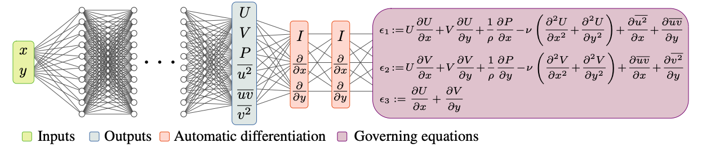
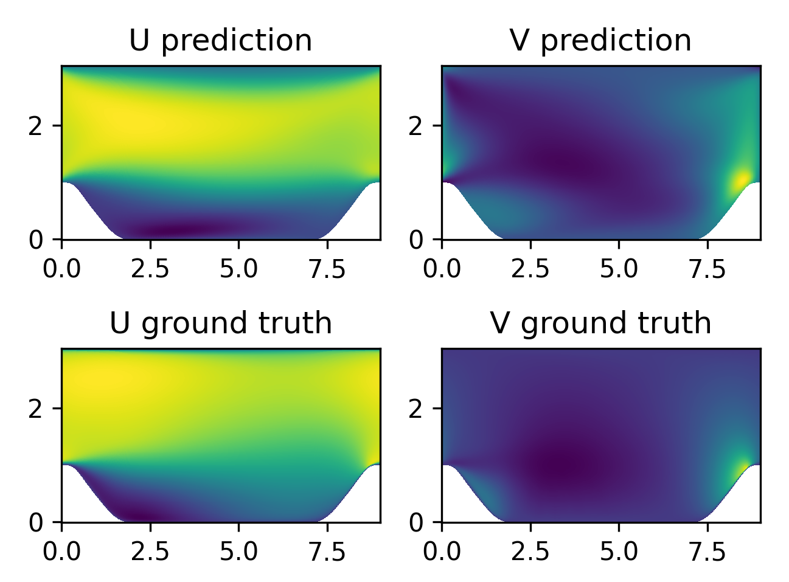
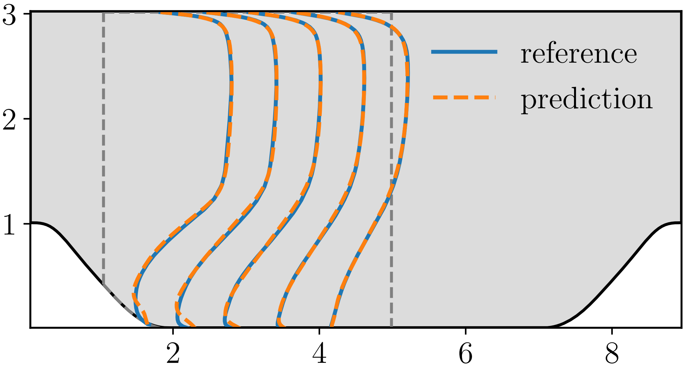

雷诺平均Navier-Stokes方程求解周期山流动


概述
雷诺平均Navier-Stokes方程求解周期山流动问题是流体力学和气象学领域中的一个经典数值模拟案例，用于研究空气或流体在周期性山地地形上的流动行为。这个问题旨在探究山地地形对大气或流体运动的影响，从而深入理解气象现象、地形效应以及流体在复杂地形下的特性。本项目采取雷诺平均模型模拟湍流在二维周期山地地形上的流动。
雷诺平均模型
雷诺平均模型（Reynolds-Averaged Navier-Stokes equations，RANS）是流体力学领域中常用的数值模拟方法之一，用于研究流体在不同雷诺数条件下的平均行为。该模型以法国科学家雷诺（Osborne Reynolds）的名字命名，通过对流场变量进行时间平均操作，提供了一种处理湍流问题的工程实用途径。雷诺平均模型基于雷诺分解原理，将流场变量分解为平均分量与脉动分量。通过对雷诺方程进行时间平均操作，消除了非定常的脉动项，得到了宏观流动的时间平均方程。以二维情况下的雷诺平均动量方程和连续方程为例：
雷诺平均动量方程
连续方程
其中，\(\overline{u}\) 和 \(\overline{v}\) 分别代表 x 和 y 方向的速度分量的时间平均值，\(\overline{p}\) 为压力的时间平均值，\(\rho\) 是流体密度，\(\nu\) 是运动粘性系数，\(u\) 和 \(v\) 分别为 x 和 y 方向的速度分量。
求解模型介绍
RANS-PINNs方法的核心思想是将物理方程和神经网络相结合，以获得同时具备传统RANS模型准确性和神经网络灵活性的模拟结果。在该方法中，基于RANS的平均流动方程与涉及湍流的各向同性涡粘性模型相结合，形成了精确的基准解。然后，通过物理信息神经网络，将剩余的湍流脉动部分进行建模，进一步提高了模拟精度。
RANS-PINNs模型结构图如下

准备工作
导入训练所需函数库，其中src文件夹包括数据集处理函数、网络模型和损失值计算函数。
训练默认采用MindSpore框架的静态图模式(GRAPH)，在GPU(默认)或Ascend进行训练(单卡)。
[1]:
import os
import time
import numpy as np
import mindspore
from mindspore import context, nn, ops, jit, set_seed, load_checkpoint, load_param_into_net, data_sink
from mindspore.amp import all_finite
from mindflow.cell import FCSequential
from mindflow.utils import load_yaml_config
from src import create_train_dataset, create_test_dataset, calculate_l2_error, NavierStokesRANS
from eval import predict
set_seed(0)
np.random.seed(0)
context.set_context(mode=context.PYNATIVE_MODE,
device_target="GPU")
use_ascend = context.get_context(attr_key='device_target') == "Ascend"
读取参数
从rans.yaml文件里导入相应的数据集、模型和优化器的参数配置。
[2]:
# load configurations
config = load_yaml_config('./configs/rans.yaml')
data_params = config["data"]
model_params = config["model"]
optim_params = config["optimizer"]
summary_params = config["summary"]
数据集构建
来源：二维圆柱绕流数值仿真流场数据，由北京航空航天大学航空科学与工程学院于剑副教授团队提供。
数据说明： 数据格式为numpy的npy，维度为：[300，700， 10]。其中前两个维度分别为流场的长和宽，最后维度为包含（x, y, u, v, p, uu, uv, vv, rho, nu）共计10个变量。其中，x, y, u, v, p分别为流场的x坐标、y坐标、x方向速度、y方向速度、压力；uu, uv, vv雷诺平均统计量；rho为流体密度，nu为运动粘性系数。
数据集下载链接: periodic_hill.npy
[4]:
# create training dataset
dataset = create_train_dataset(data_params["data_path"], data_params["batch_size"])
# create test dataset
inputs, label = create_test_dataset(data_params["data_path"])
模型初始化
根据rans.yaml中的配置，初始化RANS-PINNs模型。使用MSELoss损失函数和Adam优化器。
[5]:
model = FCSequential(in_channels=model_params["in_channels"],
out_channels=model_params["out_channels"],
layers=model_params["layers"],
neurons=model_params["neurons"],
residual=model_params["residual"],
act='tanh')
if summary_params["load_ckpt"]:
param_dict = load_checkpoint(summary_params["load_ckpt_path"])
load_param_into_net(model, param_dict)
if not os.path.exists(os.path.abspath(summary_params['ckpt_path'])):
os.makedirs(os.path.abspath(summary_params['ckpt_path']))
params = model.trainable_params()
optimizer = nn.Adam(params, optim_params["initial_lr"], weight_decay=optim_params["weight_decay"])
problem = NavierStokesRANS(model)
if use_ascend:
from mindspore.amp import DynamicLossScaler, auto_mixed_precision
loss_scaler = DynamicLossScaler(1024, 2, 100)
auto_mixed_precision(model, 'O3')
momentum_x: u(x, y)*Derivative(u(x, y), x) + v(x, y)*Derivative(u(x, y), y) + 1.0*Derivative(p(x, y), x) - 0.000178571426658891*Derivative(u(x, y), (x, 2)) - 0.000178571426658891*Derivative(u(x, y), (y, 2)) + Derivative(uu(x, y), x) + Derivative(uv(x, y), y)
Item numbers of current derivative formula nodes: 7
momentum_y: u(x, y)*Derivative(v(x, y), x) + v(x, y)*Derivative(v(x, y), y) + 1.0*Derivative(p(x, y), y) + Derivative(uv(x, y), x) - 0.000178571426658891*Derivative(v(x, y), (x, 2)) - 0.000178571426658891*Derivative(v(x, y), (y, 2)) + Derivative(vv(x, y), y)
Item numbers of current derivative formula nodes: 7
continuty: Derivative(u(x, y), x) + Derivative(v(x, y), y)
Item numbers of current derivative formula nodes: 2
bc_u: u(x, y)
Item numbers of current derivative formula nodes: 1
bc_v: v(x, y)
Item numbers of current derivative formula nodes: 1
bc_p: p(x, y)
Item numbers of current derivative formula nodes: 1
bc_uu: uu(x, y)
Item numbers of current derivative formula nodes: 1
bc_uv: uv(x, y)
Item numbers of current derivative formula nodes: 1
bc_vv: vv(x, y)
Item numbers of current derivative formula nodes: 1
模型训练
使用MindSpore >= 2.0.0的版本，可以使用函数式编程范式训练神经网络。
[6]:
def forward_fn(pde_data, data, label):
loss = problem.get_loss(pde_data, data, label)
if use_ascend:
loss = loss_scaler.scale(loss)
return loss
grad_fn = ops.value_and_grad(forward_fn, None, optimizer.parameters, has_aux=False)
@jit
def train_step(pde_data, data, label):
loss, grads = grad_fn(pde_data, data, label)
if use_ascend:
loss = loss_scaler.unscale(loss)
is_finite = all_finite(grads)
if is_finite:
grads = loss_scaler.unscale(grads)
loss = ops.depend(loss, optimizer(grads))
loss_scaler.adjust(is_finite)
else:
loss = ops.depend(loss, optimizer(grads))
return loss
epochs = optim_params["train_epochs"]
sink_process = data_sink(train_step, dataset, sink_size=1)
train_data_size = dataset.get_dataset_size()
for epoch in range(1, 1 + epochs):
# train
time_beg = time.time()
model.set_train(True)
for _ in range(train_data_size + 1):
step_train_loss = sink_process()
print(f"epoch: {epoch} train loss: {step_train_loss} epoch time: {(time.time() - time_beg)*1000 :.3f}ms")
model.set_train(False)
if epoch % summary_params["eval_interval_epochs"] == 0:
# eval
calculate_l2_error(model, inputs, label, config)
predict(model=model, epochs=epoch, input_data=inputs, label=label, path=summary_params["visual_dir"])
if epoch % summary_params["save_checkpoint_epochs"] == 0:
ckpt_name = f"rans_{epoch+1}.ckpt"
mindspore.save_checkpoint(model, os.path.join(summary_params['ckpt_path'], ckpt_name))
epoch: 1 train loss: 0.033210676 epoch time: 21279.999ms
epoch: 2 train loss: 0.019967956 epoch time: 11001.454ms
epoch: 3 train loss: 0.015202466 epoch time: 11049.534ms
epoch: 4 train loss: 0.009431531 epoch time: 10979.578ms
epoch: 5 train loss: 0.009564591 epoch time: 11857.952ms
predict total time: 361.42492294311523 ms
l2_error, U: 0.3499122378307982 , V: 1.089610520680924 , P: 1.0590148771220198
l2_error, uu: 0.6619816139038208 , uv: 0.9806737880811025 , vv: 1.223253942721496 , Total: 0.3788639206858165
==================================================================================================
epoch: 6 train loss: 0.0080219805 epoch time: 10980.343ms
epoch: 7 train loss: 0.007290244 epoch time: 11141.353ms
epoch: 8 train loss: 0.0072537386 epoch time: 11535.102ms
epoch: 9 train loss: 0.007020033 epoch time: 11041.171ms
epoch: 10 train loss: 0.0072951056 epoch time: 11033.113ms
predict total time: 45.89080810546875 ms
l2_error, U: 0.2574625213886651 , V: 1.0159654927310178 , P: 1.08665077365793
l2_error, uu: 0.6712817201442959 , uv: 1.6285996210166078 , vv: 1.6174848943769466 , Total: 0.2994041993242163
==================================================================================================
epoch: 11 train loss: 0.006911595 epoch time: 11269.898ms
epoch: 12 train loss: 0.0064922348 epoch time: 11014.546ms
epoch: 13 train loss: 0.012375369 epoch time: 10856.192ms
epoch: 14 train loss: 0.0063738413 epoch time: 11219.892ms
epoch: 15 train loss: 0.006205684 epoch time: 11509.733ms
predict total time: 1419.1265106201172 ms
l2_error, U: 0.26029930447820726 , V: 1.0100483948680088 , P: 1.1317783698512909
l2_error, uu: 0.6231199513484501 , uv: 1.097468251696328 , vv: 1.2687142671208649 , Total: 0.301384468926242
==================================================================================================
epoch: 16 train loss: 0.00825448 epoch time: 11118.031ms
epoch: 17 train loss: 0.0061626835 epoch time: 11953.393ms
epoch: 18 train loss: 0.0073482464 epoch time: 11729.854ms
epoch: 19 train loss: 0.0059430953 epoch time: 11183.294ms
epoch: 20 train loss: 0.006461049 epoch time: 11480.535ms
predict total time: 328.2887935638428 ms
l2_error, U: 0.2893996640103185 , V: 1.0164172238860398 , P: 1.118747335999008
l2_error, uu: 0.6171527683696496 , uv: 1.1570214426333394 , vv: 1.5968321768424096 , Total: 0.3270872725014816
==================================================================================================
...
epoch: 496 train loss: 0.001080659 epoch time: 11671.701ms
epoch: 497 train loss: 0.0007907547 epoch time: 11653.532ms
epoch: 498 train loss: 0.0015688213 epoch time: 11612.691ms
epoch: 499 train loss: 0.00085494306 epoch time: 11429.596ms
epoch: 500 train loss: 0.0026226037 epoch time: 11708.611ms
predict total time: 43.506622314453125 ms
l2_error, U: 0.16019161506598686 , V: 0.561610130067435 , P: 0.4730013943213571
l2_error, uu: 1.0206032668202991 , uv: 0.812573326422638 , vv: 1.5239299913682682 , Total: 0.18547458639343734
训练结果可视化
以下为RANS-PINNs模型预测结果和真实值的对比：

结果展现了流场中不同位置的横向速度U和纵向速度V的分布情况，其中，下图为真实值，上图为预测值。
以下为RANS-PINNs模型的横向速度剖面图：

其中蓝线为真实值，橙色虚线为预测值。